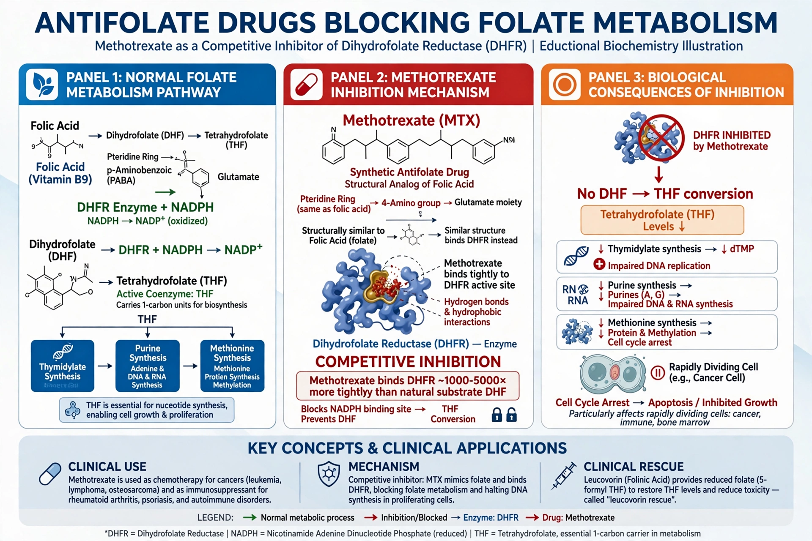

| Antifolate | |
|---|---|
 | |
| Drug class | Antimetabolites |
| Mechanism | Inhibition of dihydrofolate reductase / folate metabolism |
| Examples | Methotrexate, trimethoprim, pyrimethamine, pemetrexed |
Antifolates are a class of antimetabolite drugs that antagonise the actions of folic acid (vitamin B9). Folate is essential for synthesis of purines and thymidylate, and thus for DNA synthesis and cell division. By blocking folate-dependent enzymes, antifolates preferentially harm rapidly dividing cells.
Many antifolates inhibit dihydrofolate reductase (DHFR), which reduces dihydrofolate to tetrahydrofolate. Others, such as pemetrexed, inhibit multiple folate-dependent enzymes including thymidylate synthase and glycinamide ribonucleotide formyltransferase.
Methotrexate, introduced in the late 1940s as one of the first chemotherapy agents, is used in cancer, rheumatoid arthritis, and psoriasis. Trimethoprim and pyrimethamine exploit differences between microbial and human DHFR to treat bacterial and protozoal infections, including malaria and toxoplasmosis. Pemetrexed is used in lung cancer and mesothelioma.
Toxicity affects bone marrow, gastrointestinal mucosa, liver, and kidneys, causing myelosuppression, mucositis, and hepatotoxicity. Antifolates are potent teratogens and are contraindicated in pregnancy. Leucovorin (folinic acid) rescue can mitigate methotrexate toxicity.
Sidney Farber's 1948 demonstration that aminopterin induced remissions in childhood leukaemia founded modern chemotherapy and the antifolate field.